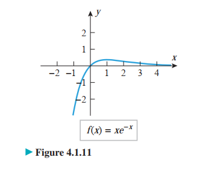

Although graphing utilities are useful for determining the general shape of a graph, many problems require more precision than graphing utilities are capable of producing. The purpose of this section is to develop mathematical tools that can be used to determine the exact shape of a graph and the precise locations of its key features.
Интервали на растење и опаѓање
Терминот растење, опагање, и константна се употребуваат да го опишат однесувањто на една функција кога се движиме од лево на десно по нејзиниот граф. На пример, за функцијата чиј граф е претставен на долната слика може да се каже дека лево од точката `x = 0` функцијата е растечка, од `x = 0` до `x = 2` е опаѓачка и растечка од `x = 2` до `x = 4` и монотона од `x = 4` на десно.
Следната дефиниција, претставена на сликата, ја претставува оваа интуитивна идеата прецизно.
Дефиниција 1
Нека `f` е дефинирана на интервал `I` и нека `x_1, x_2 in I`.
i) `f` е растечка на `I`, ако `f(x_1) < f(x_2)`, за `x_1 < x_2`.
ii) `f` е опаѓачка на `I`, ако `f(x_1) > f(x_2)`, за `x_1 < x_2`.
iii) `f` е константна на `I`, ако `f(x_1) = f(x_2)`, за сите точки `x_1` и `x_2`.
Нека `f` e диференцијабилна функција во точката `x_0` и нека `f'(x_0) > 0`.
Тоа повлекува дека
`f^'(x_0) = lim_(x->x_0) (f(x) - f(x_0))/(x - x_0) > 0`
Ако `x` e блиску до `x_0`, но `x != x_0`, тогаш
`(f(x) - f(x_0))/(x - x_0) > 0`
Ова ќе се случи во следните два случаи:
`f(x) - f(x_0) > 0` и `x - x_0 > 0`
`f(x) - f(x_0) < 0` и `x - x_0 < 0`.
Во првиот случај, `x > x_0` и `f(x) > f(x_0)`, а во вториот `x < x_0` и `f(x) < f(x_0)`. Значи, ако `f` е диференцијабилна функција и има позитивен наклон во `x_0`, тогаш `f` расте во околина на точката `x_0.
Слично, се покажува дека ако `f^'(x_0) < 0`, тогаш `f` опаѓа во околина на точката `x_0` и ако `f'(x_0)=0`, тогаш `f` е константна во околина на точката `x_0`.
Претходната дискусија може да се визуализира со сликата подолу, која укажува дека ако `f` е диференцијабилна функција, тогаш
`f` e растечка на даден интервал, ако секоја тангента на тој график има позитивен наклон;
`f` e опаѓачка на тој интервал, ако секоја тангента има негативен наклон;
`f` e е константна на тој интервал, ако тангента има наклон `0`.
Теорема 1
Нека `f` е непрекината функција на затворениот интервал `[a,b]` и диференцијабилна на отворениот интервал `(a,b)`.
i) Ако `f' > 0 ` за сите `x in (a, b)` тогаш `f` е растечка на `[a, b]`.
ii) Ако `f' < 0 ` за сите `x in (a, b)` тогаш `f` е опаѓачка на `[a, b]`.
iii) Ако `f' = 0 ` за сите `x in (a, b)` тогаш `f` е константна на `[a, b]`.
Да воочиме дека во Теорема 1, условите за изводите треба да важат само во отворениот интервал `(a,b)`, но заклучоците се донесуваат за затворениот интервал `[a,b]`.
Забелешка. Теорема 1 е формулирана за конечни интервали. Но тврдењето важи за секој интервал на кој `f` ги исполнува условите од теоремата. На пример, ако `f` e непрекината на `[a, +oo)` и `f ′(x) > 0` на `(a, +oo)`, тогаш `f` е растечка на `[a, +oo)`. Aко `f` e непрекината на `(-oo, +oo)` и `f ′(x) < 0` на `(-oo, +oo)`, тогаш `f` е опаѓачка на `(-oo, +oo)`.
Пример 1. Да се определат интервалите на кои функцијата
`f(x) = x^2 - 4x + 2`
расте и оние интервали на кои таа опаѓа.
Решение. Изводот на `f` е
`f^'(x) = 2x - 4`
Сега,
`f^'(x)< 0` ако `x < 2`
`f^'(x)> 0` ако `x > 2`
Согласно Теорема 1, `f` е опаѓачка на `(-oo, 2]` и `f` е растечка на `[2, +00)`.
Графикот на функцијата е даден на сликата и тој го потврдува претходниот заклучок.
Пример 2. Да се определат интервалите на кои функцијата
`f(x) = x^3`
расте и оние интервали на кои таа опаѓа.
Решение. Изводот на `f` е `f'(x) = 3x^2`
Сега, `f '(x) > 0`, за `x < 0` и за `x> 0`.
Согласно Теорема 1, `f` е растечка на `(-oo, 0]` и `f` е растечка на `[0, +oo)`.
Според тоа, `f` е растечка на `(-oo, +oo )`, што може да се види и од графикот на функцијата.
Пример 3. Да се определат интервалите на кои функцијата
`f(x) = 3x^4 + 4x^3 -12x^2 + 2`
расте и оние интервали на кои таа опаѓа.
Решение. Изводот на `f` е
`f^'(x) = (12x^3 + 12x^2 -24x) = 12(x^3 + x^2 -2x) = 12x(x^2 + x - 2) = 12x(x + 2)(x - 1)`'
Бидејќи `f^'` е непрекината (како полиномна) функција, таа може да го промени знакот само во точките каде нејзиниот график ја сече `x`-оската, т.е. само во оние `x` во кои `f^' (x) = 0`, а тоа се `x = −2`, `x = 0` и `x = 1`.
Анализата за знакот на `f^'` е дадена во следната табела.
| интервал | Знак на `12x(x+2)(x-1)` |
Знак на `f^'` | Заклучок |
|---|---|---|---|
| `(+oo, -2)` | `(-)(-)(-)` | `(-)` | `f` е опаѓачка на интервалот `(-oo, -2]` |
| `(-2, 0)` | `(-)(+)(-)` | `(+)` | `f` е растечка на интервалот `[-2, 0]` |
| `(0, 1)` | `(+)(+)(-)` | `(-)` | `f` е опаѓачка на интервалот `[0, 1]` |
| `(1, +oo)` | `(+)(+)(+)` | `(+)` | `f` е растечка на интервалот `[1, +oo)` |
Конкавност и конвексност
- `f` е конкавна на отворен интервал ако нејзината тангента има растечки наклон на тој интервал и е конвексна ако ако има опаѓачки наклон.
- `f` е конкавна на отворен интервал ако нејзиниот граф лежи над нејзината тангента на тој интервал и е конвексна ако графот лежи под нејзината тангента.
Дефиниција
Ako `f` е диференцијабилна на отворен интервал , тогаш велиме дека `f` е конкавна на интервалот ако `f` е растечка на тој интервал и за функцијата `f` велиме дека е конвексна ако е опаѓачка на тој интервал.
Бидејки наклонот на тангентата на графот на диференцијабилна функција `f` се вредностите на нејзинте изводи `f'`, `f'` ќе биде растечки на итервалот каде vtoriot izvod `f''` е позитивен а `f'` ќе биде опаѓачки на интервалот каде вториот извод `f''` е негативен. Од тука следи теоремата.
Теорема 2
Нека функцијата `f` е двојно диференцијабилна на отворен интервал.
а. Ако `f'' > 0 ` за секоја вредност на `x` на тој интервал тогаш функцијата `f` е конкавна на тој интервал.
б. Ако `f''< 0 ` за секоја вредност на `x` на тој интервал тогаш функцијата `f` е конвексна на тој интервал.
Пример 4. Да се определат интервалите на кои функцијата
`f(x) = x^2 + 4x + 3`
е конвексна и оние на кои е конкавна.
Решение. За функцијата `f`
`f'(x) = 2x -4 = 2(x-2)`
`f''(x) = 2 > 0`
за секое `x in (-oo, +oo)`
Согласно Теорема 2, `f` е конкавна (вдлабната) на `(-oo, +oo).
Пример 5. Да се определат интервалите на кои функцијата
`f(x) = x^3`
е конвексна и оние на кои е конкавна.
Решение. За функцијата `f`
`f'(x) = 3x^2`
`f''(x) = 6x`
Сега `f''(x) < 0` за `x < 0` и `f''(x)> 0` за `x > 0`
Согласно Теорема 2, `f` е конкавна (вдлабната) на `(-oo, +oo)`.
Согласно Теорема 2, `f` е конвексна (испакната) на `(-oo, 0`) и конкавна (вдлабната) на `(0, +oo)`.
Превојна точка
Дефиниција 4
Нека `f` е непрекината на отворен интервал кој ја содржи точката `x_0` и нека во точката `(x0, f(x_0))`, `f` поминува од конвексна во конкавна, или обратно. Тогаш велиме дека `(x_0, f(x_0))` е превојна точка на графикот на `f`.
На пример, графикот на `f(x) = x^3` во точката `x = 0` поминува од конвексен во конкавен, па `(0,0)` е превојна точка на графикот на `f`.
Пример 6. Да се најде (ако постои) превојна точка на графикот на
`f(x) = xe^-x`
Решение.
`f'(x) = u*v = u'v + uv' = 1*e^-x + x(-e^-x) = (1 - x)e^-x`
`f'(x) = u*v = u'v + uv' = -1*e^-x + (1 - x)(-e^-x) = -e^-x - e^-x + xe^-x = (x -2)e^-x`
Бидејќи, `е^-x > 0`, за секој `x`, знакот на `f''` зависи само од знакот на `x - 2`. Затоа,
`f''(x) < 0 x < 2`
`f''(x) > 0 x > 2`
Согласно Теорема 2, `f` е конвексна (испакната) на `(-oo, 2)` и конкавна (вдлабната) на (2, +oo). Оттука, `(2,f(2))->(2, 2e^-2)` е превојна точка на графикот на `f`
Локални екстреми
Дефиниција 1
i) За функцијата `f` велиме дека има локален максимум во точката `x_0`, ако постои некој отворен интервал I кој ја содржи `x_0`, така што `f(x_0) >= f(x)`, за секој `x in I`.
ii) За функцијата `f` велиме дека има локален минимум во точката `x_0`, ако постои некој отворен интервал I кој ја содржи `x_0`, така што `f(x_0) <= f(x)`, за секој `x in I`.
iii) Локалните минимуми и локалните максимуми во точката `x_0` со едно име се нарекуваат локални екстреми во `x_0`.
- `f(x) = x^2` има локален минимум во `x = 0`, но нема локален максимум.
- `f(x) = x^3` нема локални екстреми.
- `f(x) = x^3 − 3x + 3` има локален максимум во `x = −1` и локален минимум во `x = 1`.
- `f(x) = (1/2)x^4 − (4/3)x3 − x^2 + 4x + 1` има локален минимум во `x = −1` и `x = 2` и локален максимум во `x = 1`.
- `f(x) = cosx` има локален максимум во точките `2kπ` и има локален минимум во точките `(2k + 1)π`, каде `k in Z`.
Дефиниција 2
i) Точката `x_0` e критична точка за функцијата `f`, ако `f ′(x_0) = 0` или `f` не е диференцијабилна во `x_0`.
ii) Точката `x_0` e стационарна точка за функцијата `f`, ако `f'(x_0) = 0`
Теорема 1
Нека функцијата `f` е дефинирана на отворен интервал кој ја содржи точката `x_0`. Ако `f` има локален екстрем во `x = x_0`, тогаш `x = x_0` е критична точка на `f`, т.е. `f` `(x_0) = 0` или `f` не е диференцијабилна во `x_0`.
Тест со први изводи
Ќе велиме дека `f'` го менува знакот од позитивен `(+)` во негативен `(-)` во `x_0`, ако постои отворен интервал `(а, x_0)` лево од `x_0` така што `f'(x) > 0`, за секој `x in (а, x_0)` и постои отворен интервал `(x_0, b)` десно од `x_0` така што `f' (x) < 0`, за секој `x in (x_0, b)`.
Аналогно, `f'`го менува знакот од негативен `(-)` во позитивен `(+)` во `x_0`, ако постои отворен интервал `(а, x_0)` лево од `x_0` така што `f'(x) < 0`, за секој `x in (а, x_0)` и постои отворен интервал `(x_0, b)` десно од `x_0` така што `f'(x)> 0`, за секој `x in (x_0, b)`.
Теорема 2
Нека `f` е непрекината во критичната точка `x_0`.
i) Ако `f'` го менува знакот од позитивен `(+)` во негативен `(-)` во `x_0`, тогаш
`f` има локален максимум во `x_0`.
ii) Ако `f'` го менува знакот од негативен `(-)` во позитивен `(+)` во `x_0`, тогаш
`f` има локален минимум во `x_0`.
iii) Ако `f'` го не менува знакот во `x_0`, тогаш `f` нема локални екстреми во
`x_0`.
Пример 1. Да се определат (ако постојат) локалните екстреми на
`f(x) = 5x^(5/3) -15x^(2/3)`
Решение. Најпрво го определуваме првиот извод на функцијата `f`.
`f'(x) = (5(x-2))/(x^(1/3))`
Притоа, `f'(x) = 0`, ако `x = 2`, и `f` не е диференцијабилна во `x = 0`. Затоа, `x = 0` и `x = 2` се критични точки за функцијата `f`
Анализата на знакот на f е дадена во табелата.
| интервал | Знак на `(5(x-2))/(x^(1/3))` |
Знак на `f^'` |
|---|---|---|
| `(+oo, 0)` | `((-))/((-))` | `(+)` |
| `(0, 2)` | `((-))/((+))` | `(-)` |
| `(2, +oo)` | `(+)(+)` | `(+)` |
Од анализата може да се види дека во `x = 0`, `f'` го менува знакот од `(+)` во `(-)`, па `f` има локален максимум во оваа точка. Од друга страна, во `x = 2`, `f'` го менува знакот од `(-)` во `(+)`, па `f` има локален минимум во `x = 2`.
Тест со втори изводи
Теорема 3
Нека `f` е двапати диференцијабилна во `x_0` и `f' (x_0) = 0`.
i) Ако `f''(x_0) < 0`, тогаш `f` има локален максимум во `x_0`.
ii) Ако `f''(x_0) > 0`, тогаш `f` има локален минимум во `x_0`.
iii) Ако f ′′(x0) = 0, тогаш не може да се извлече` никаков заклучок; може `f` да
има локален максимум, локален минимум во `x_0` или да нема екстрем во `x_0`.
Пример 3. Со користење на тестот со втори изводи, да се определат (ако постојат) локалните екстреми на
`f(x) = 3x^5 - 5x^3`
Решение. Најпрво го определуваме првиот извод на функцијата `f`:
`f'(x) = 15x^4 -15x^2 = 15x^2(x^2 - 1) = 15x^2(x - 1)(x + 1)`
Притоа, `f'(x) = 0`, ако `x = 0`, `x = –1` и `x = 1`. Тоа се критичните точки на функцијата `f`.
За вториот извод на `f` се добива:
`f''(x) = 60x^3 - 30x`
Сега,
`f''(–1) = –30 < 0, па `f` има локален максимум во `x = –1`.`
`f''(1) = 30 > 0, па `f` има локален минимум во `x = –1`.`
`f''(0) = 0, па овој тест не дава одговор`
Затоа се преминува на тестот со прв извод.